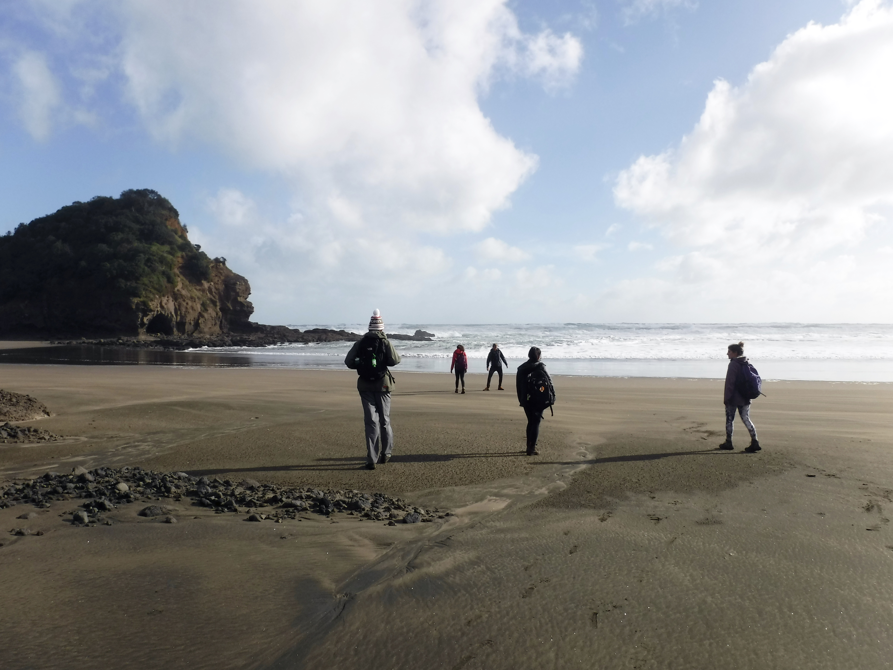
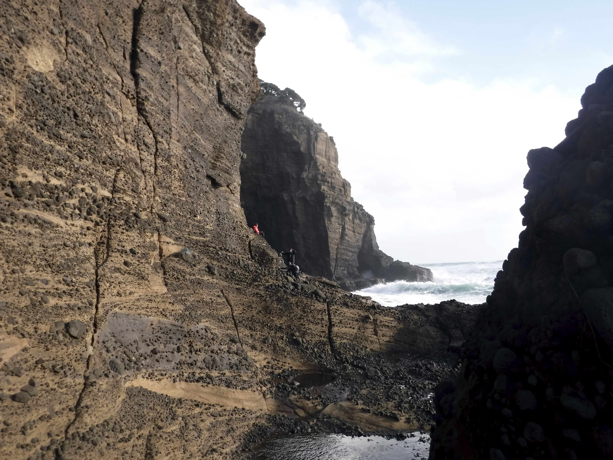

July
25 days I've been in New Zealand. I've felt... a million emotions. But, mostly: whole.
After two years of living on the East Coast of the United States, in the middle of rural Massachusetts, I've finally returned to a place where I can see the ocean from my bedroom window, I'm surrounded by mountains, and the roads wind and curve like the coastlines they run against.

I'm living in a massive city, but the country isn't more than a half hours' drive away. This place is absolutely beautiful.

My first thirty-six hours here were a rollercoaster of emotions. Excitement, at finally arriving; dread, upon realising there was no Wi-Fi in my flat; and terror, in abruptly recognising the fact that I was in a foreign city with absolutely no local knowledge and no idea who to contact in case of emergency.

Luckily, I survived, found myself an Ethernet cord (and adaptor plug-in), and happily met up with my program the next morning at the airport. Orientation, and the rest of the semester, was set to begin.
Now, school is in full swing and I'm enjoying my classes immensely. Te Ao Maori: The Maori World and Te Ao Hou / Contemporary Maori Issues, my two Maori Studies classes, force me every day to question what it means to be a Pacific Islander. With each reading, I beg the question: What does it meant to be indigenous?
Is it a blood quantum? A government-issued ID card? A tattoo? I don't know.
Left photo by Tess.
I sit in my Maori Studies courses here and wonder how I would feel taking Hawaiian Studies courses back home. Maybe I wouldn't suffer the 24/7 identity crises I do on the East Coast. Then again, maybe they'd be worse, being so close to the source.
One thing's for sure, I wouldn't know as much about myself as I do now. I probably wouldn't care as much about being native Hawaiian, to be completely honest. You need to leave a place to appreciate the beauty it holds.

Over the past three weeks I've traveled all over the greater Auckland, and a bit beyond! Every beach I visit, every hike I walk, the one thing I can't stop saying is: this place is so beautiful.
All along the west coast lie spectacular black sand beaches, stretching for miles and miles, intermingled with caves, tide pools, and various other rock formations, enough to make a geologist wild. (s/o to Tekla #geo111).
I've found some 'opihi and Portuguese Man-Of-War (ew), but not many other familiar faces. Tidepools are always treasure troves of sea creatures.
It's so nice living by the water again.
Being here is such a privilege and I'm forever grateful for this opportunity. To travel here and experience this amazing place is an adventure people spend lifetimes dreaming about. I am forever indebted to those who helped me get here. Mahalo piha.
Hala no ia o ka pōloli.
An expression of thankfulness that there was food for another day.
⚬